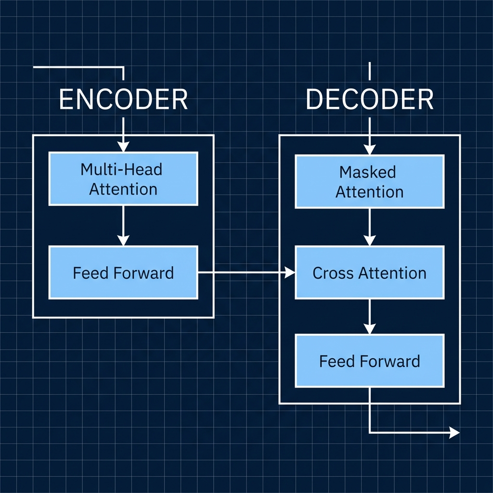
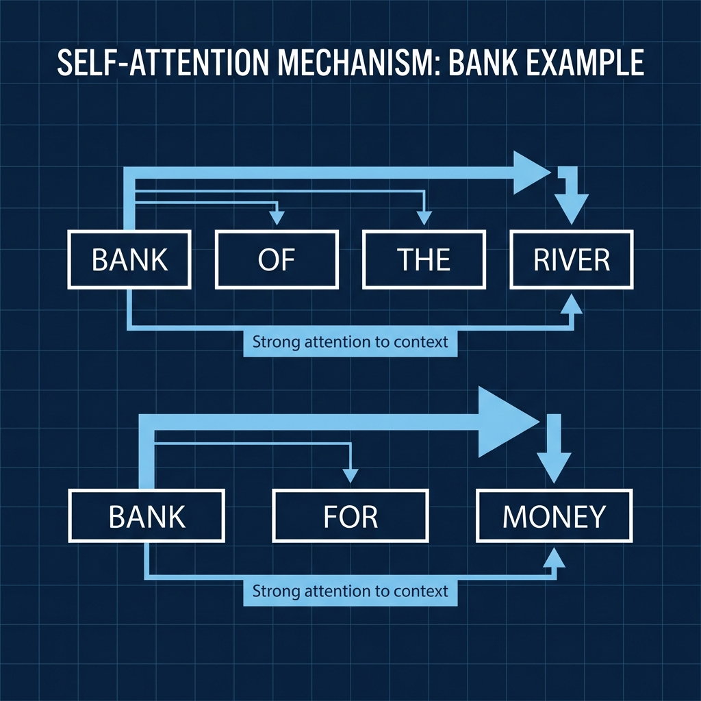
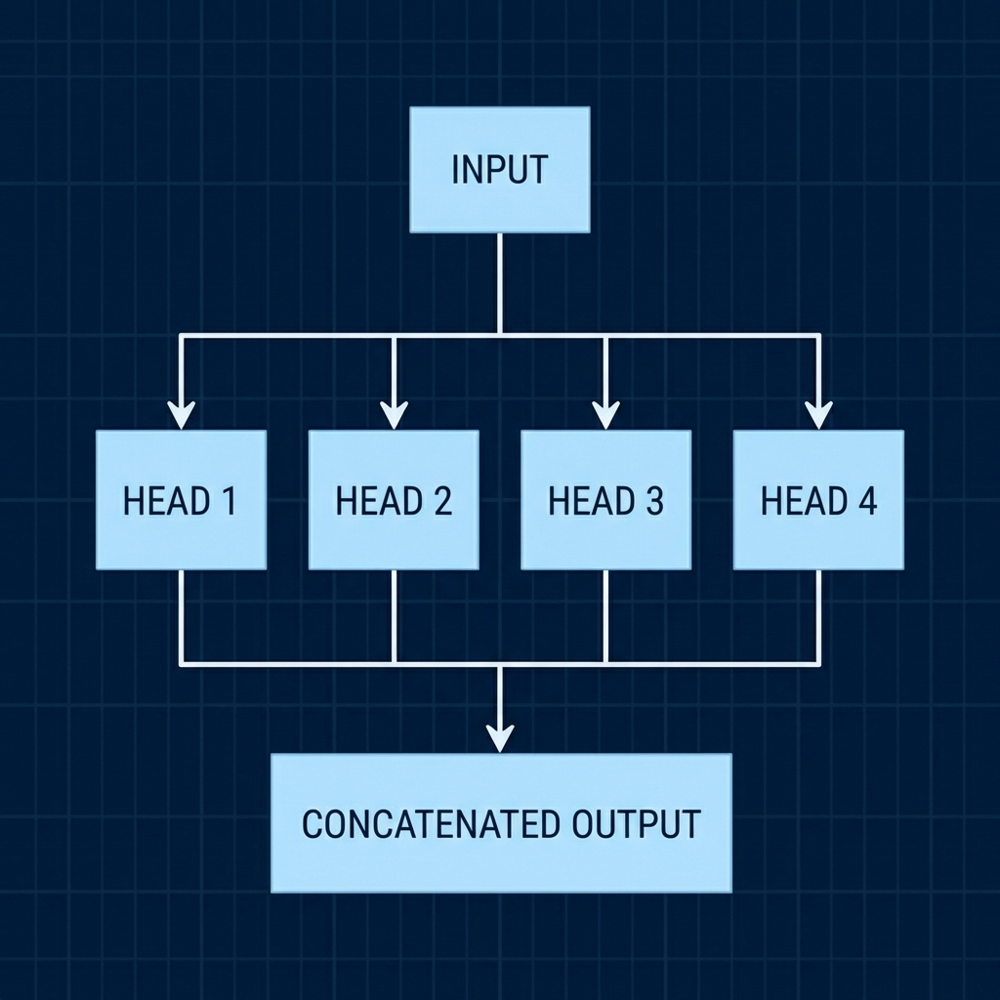

Generative AI & Large Language Models
Course: Computer Systems Engineering
Module: Artificial Intelligence (AI)
Topic: Large Language Models (LLMs) & Transformers
Estimated Reading Time: 35 Minutes
By the end of this chapter, you will be able to:
1. Explain the limitations of RNNs and the advantages of the Transformer architecture.
2. Describe the mechanism of Self-Attention (Query, Key, Value).
3. Contrast Pre-training (Next-Token Prediction) and Alignment (RLHF).
4. Deploy a Quantized LLM for local inference using Python.
Week 10 Goal:
Earlier in the course, we trained a small custom model on 20 sentences—an educational exercise, but not how real-world AI works today. We're now in the era of foundation models: massive neural networks pre-trained on vast internet-scale data (Wikipedia, books, Reddit, code, and more) by companies like OpenAI, Meta, Anthropic, and Google. Models like GPT-4o, Llama 3.1, Claude 3.5, and Gemma exemplify generalized intelligence emerging from scale. This week, we shift from "training from scratch" to prompting and deploying these pre-built giants. We'll dive into the Transformer architecture that powers them and adopt the mindset of an AI Engineer who leverages rather than builds these models.
1. The Transformer Revolution
Before 2017, sequence models like Recurrent Neural Networks (RNNs) and LSTMs processed text sequentially—word by word. This was slow (no parallelization across time steps) and suffered from vanishing gradients, making it hard to capture long-range dependencies.
In 2017, Google researchers published the groundbreaking paper "Attention Is All You Need", introducing the Transformer architecture—which ditched recurrence entirely in favor of attention mechanisms.

Figure 1: The classic Transformer architecture (Vaswani et al., 2017), showing the Encoder (Left) and Decoder (Right) stacks.
1.1 Self-Attention: The Core Innovation
Imagine reading "The animal didn't cross the street because it was too tired." What does "it" refer to? Humans instantly relate words across the sentence.
Self-attention does this mathematically—and for every word simultaneously. It computes attention scores between every pair of words, building a rich contextual representation.
Your "bank" example remains perfect: For "bank" near "river" vs. "money," attention weights disambiguate meaning.

Figure 2: Visualizing how self-attention resolves ambiguity. Connections show how "Bank" pays attention to "River".
1.2 Multi-Head Attention
Transformers don't use just one attention layer—they use multi-head attention, running several attention mechanisms in parallel. Each "head" learns to focus on different aspects (e.g., one on syntax, another on semantics).

Figure 3: Multiple heads process the input in parallel, capturing different linguistic features before being combined.
1.3 Positional Encoding
Attention has no built-in sense of order. To fix this, Transformers add positional encodings (fixed sine/cosine waves or learned vectors) to word embeddings.
1.4 Deep Dive: How Attention Works (Q, K, V)
Think of attention as a differentiable database lookup:
-
Query (Q): What the current word is "asking" for.
-
Key (K): What each other word "offers" as a match.
-
Value (V): The actual content to retrieve.
Steps:
1. Compute dot-product similarity: score = Q · Kᵀ
2. Scale by √dₖ (dimension) to stabilize gradients.
3. Softmax to get weights.
4. Weighted sum: Attention = softmax(scores) · V
In decoder-only models (like GPT), causal masking prevents "peeking" at future tokens.
1.5 Parallelization & Scale
By processing all words at once, Transformers are highly parallelizable on GPUs/TPUs. Self-attention scales quadratically with sequence length, which makes very long contexts computationally expensive and motivates recent efficiency innovations. However, this parallelization enabled training on thousands of GPUs for months, consuming petabytes of data—leading to emergent abilities (e.g., arithmetic, translation) not explicitly trained for.
- Self-Attention: Relates every word to every other word to understand context ("Bank" of a river vs "Bank" for money).
- Multi-Head: Multiple "eyes" looking at the text simultaneously to capture syntax, semantics, and context.
- No Recurrence: Unlike RNNs, Transformers process the entire sentence at once, enabling massive parallel scaling.
[!TIP]
Think About It: Why might parallelization enable "emergent"
abilities?
Hint: It's not just about speed. It allows the model to see vastly more data than any
human
could read in a thousand lifetimes. At this scale, the model stops just "memorizing" and
starts "generalizing" to find rules.
2. Large Language Models (LLMs)
Modern LLMs follow a two-stage process: pre-training (expensive) + post-training (alignment).
2.1 Pre-training: Next-Token Prediction
The model predicts the next token in massive text corpora. This simple objective accidentally teaches grammar, facts, reasoning, and code.
2.2 Alignment: From Text Completer to Helpful Assistant
Raw pre-trained models are great at continuation but not instruction-following.
Reinforcement Learning from Human Feedback (RLHF) or modern alternatives like Direct Preference Optimization (DPO) align models through a cyclical process. It begins with humans ranking model responses from best to worst. A "Reward Model" is then trained to learn these human preferences, essentially understanding what a "good" answer looks like. Finally, the main LLM is optimized against this reward model, learning to maximize its score by producing responses that are helpful, honest, and harmless.
Example:
-
Prompt: "How do I bake a cake?"
-
Raw: Continues with unrelated text.
-
Aligned: Provides a clear recipe.
As of 2026, many models incorporate inference-time scaling (e.g., internal chain-of-thought in reasoning models like OpenAI's o-series or DeepSeek R1) for better performance on complex tasks.
2.3 Foundation Model Flavors
While all modern models use Transformers, they come in different architectural flavors suited for specific tasks. Encoder-only models (like BERT) are bidirectional, meaning they look at the whole sentence at once; they excel at "understanding" tasks like classification or sentiment analysis. Decoder-only models (like GPT, Llama, and Claude) are autoregressive, meaning they predict the next word in a sequence; these have become the dominant architecture for modern generative AI and chatbots. Finally, Encoder-Decoder models (like T5) combine both, making them ideal for sequence-to-sequence tasks like translation or summarization.
Many 2025–2026 models are multimodal (text + image/video/audio).
- Pre-training: Teaches the model "Language and Facts" (The base capability).
- Alignment (RLHF/DPO): Teaches the model "Helpfulness and Safety" (The chat personality).
- Decoder-Only: The dominant architecture for today's Generative AI (GPT-4, Claude, Llama).
3. Hugging Face & Deployment
Hugging Face is the "GitHub of AI"—hosting millions of open-source models, datasets, and tools.
3.1 The Standard Deployment Pipeline
Deploying an LLM involves a standardized pipeline, regardless of whether you are running a tiny model on your laptop or a massive one in the cloud. First, you Select a Model appropriate for your hardware constraints (e.g., Phi-3 for CPUs vs Llama-405B for GPU clusters). Next, the input text must be Tokenized, converting human language into the specific numerical IDs the model understands. The core step is Inference, where the model runs a forward pass to generate probability scores (logits) for the next possible token. Finally, a Decoding strategy (like sampling or greedy search) picks the best token and converts it back into text, repeating this loop until the response is complete.
Tools like transformers library + pipeline() abstract this. Modern stacks
often
use vLLM for ultra-fast, high-throughput inference serving.
[!TIP]
Hardware Tip: Use quantization (e.g., 4-bit) for local deployment; use APIs
for
closed models.
[!NOTE]
Key Takeaways: Section 3
- The Hub: Hugging Face is the central repository for open-source AI.
- Pipeline: Tokenize -> Inference -> Decode.
- Optimization: Techniques like Quantization and FlashAttention are
critical
for running these giants on real hardware.
4. Lab Preview: Choosing Your Path
For Week 10, we have provided two separate labs depending on your available hardware. Choose the one that fits your setup:
Option A: Lab 1 (CPU Inference)
Best for: Laptops (even without GPUs), MacBooks (M1/M2/M3), and standard desktops.
-
Technology: We use Quantization (GGUF format) to compress the model to ~5GB.
-
Tool:
ctransformerslibrary. -
Result: You will run a powerful Llama 3.1 8B model locally, though at a slower speed (3-10 tokens/sec).
Option B: Lab 2 (GPU Acceleration)
Best for: Gaming PCs or Cloud Instances with NVIDIA GPUs (6GB+ VRAM).
-
Technology: We use 8-bit loading via CUDA cores.
-
Tool:
transformers+acceleratelibraries. -
Result: You will experience blazing fast generation speeds (50+ tokens/sec).
In both labs, you will build a local Python script to chat with the AI, keeping your data completely private.
5. Summary & Key Takeaways
-
Transformers replaced sequential processing with parallel self-attention, enabling massive scale.
-
Attention (QKV + multi-head) + positional encoding captures rich context.
-
LLMs are pre-trained on next-token prediction, then aligned (RLHF/DPO) for helpfulness.
-
Most modern LLMs are decoder-only; foundation models power everything from chatbots to code assistants.
-
Hugging Face democratizes access—focus on prompting, fine-tuning, and deployment.
Reflection Question: How might the quadratic complexity of attention limit context length, and what recent innovations (e.g., sparse attention, FlashAttention) address this?
Next week: Prompt engineering and ethical considerations.
- Attention: Mechanism to weigh the importance of different words in a sentence relative to each other.
- Query / Key / Value (Q/K/V): The internal vectors used to calculate attention scores. (Q looks for a match, K provides the match, V provides the content).
- RLHF: Reinforcement Learning from Human Feedback. Examples: Learning not to be toxic.
- Multimodal: Models that can see (Images), hear (Audio), and read (Text) simultaneously.
- Inference: The process of using a trained model to generate predictions.
Test Your Knowledge
Ready to check your understanding of this week's material? Take the interactive quiz now!
Start Quiz